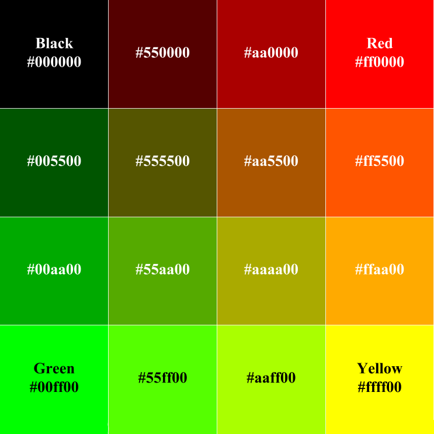
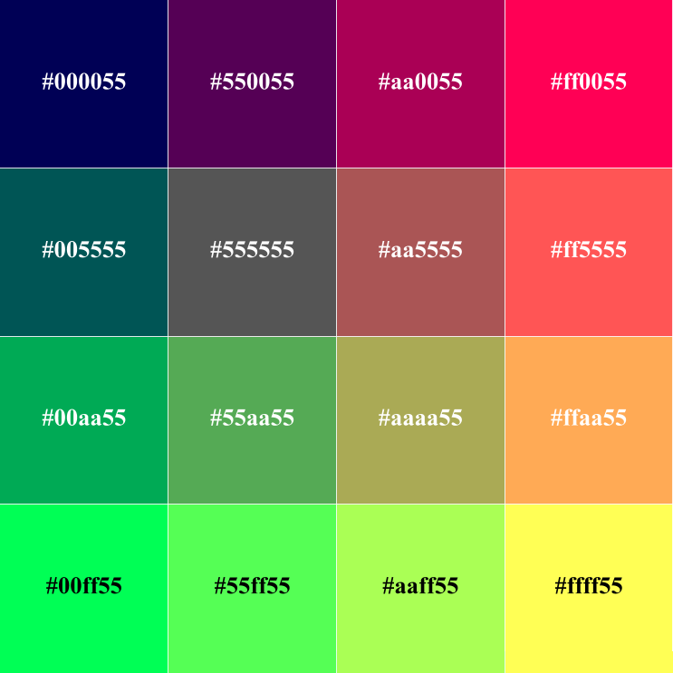
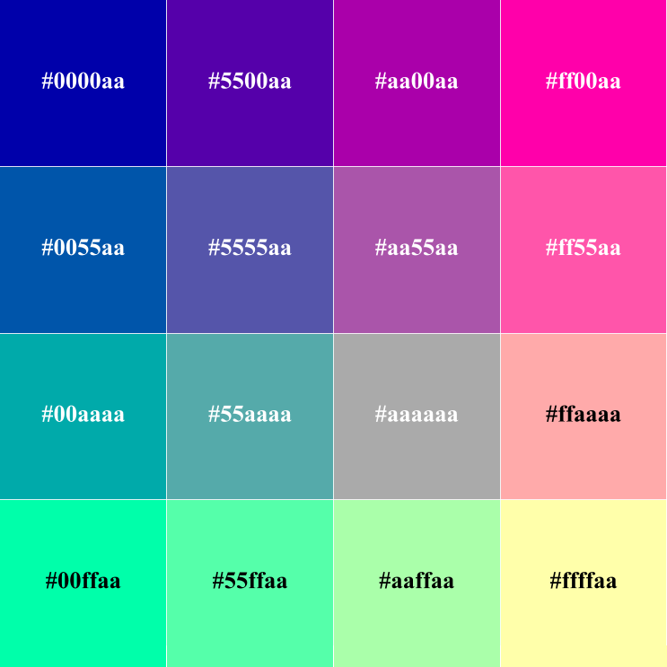
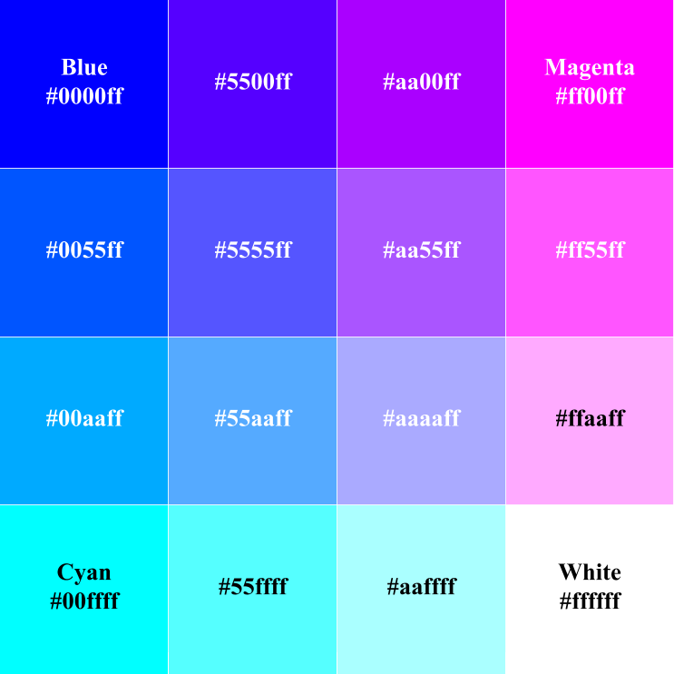

Base 4 Color Gamut
A base 4 color gamut allows for four possible levels (including absence) of each color in RGB. This allows for a complete palette of 43, or 64 colors.
| Intensity | RGB Decimal | Hexadecimal |
|---|---|---|
| 0 (off) | 0 | 00 |
| 1 | 85 | 55 |
| 2 | 170 | aa |
| 3 (full) | 255 | ff |




Next--the base five color gamut